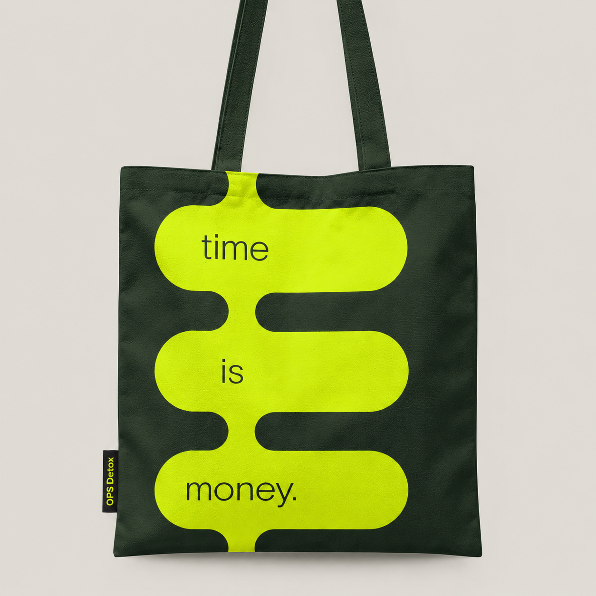

less non-essential meeting time. Up to €8K reclaimed per employee
Operational detox for scale-ups
Give your leadership team a third of its week back.
We help scale-up founders run a faster, leaner company by cleansing its operations of everything growth left behind, together with their team.

Flush the pipelines • UNCOMPLICATE the decision • CLEAN THE SYSTEMS • Unclog the approval queue • Strip the NOISE • Drain the decision backlog •
The problem
Nobody designed it this way. It simply accumulated.
- Every decision queues on one desk. An €800 approval waits four days because the founder is travelling.
- The calendar is full and the week produces little. Meetings end in another meeting, rarely in a decision.
- Your best people spend their evenings formatting reports nobody opens.
- Nine tools, and none of them speak to each other.
- The truth reaches you late and polished. What people really thought, you hear in the exit interview.
- You hired to relieve the pressure. Within a month, the new people sat in the same meetings.
Left as it is, it costs your leadership a third of every week, and your company the speed that made it successful.
The solution — OPS Detox™
There is a cleaner way to run a growing company.
OPS Detox™ is a modular system for the real bottlenecks in how work flows. Each module stands alone; together, they reset how the company runs.
We measure where your time, decisions and truth actually go. Then we strip out what no longer serves the business and rebuild the structure together with your team, so it holds long after we have left.

The result
20–35%
25–40%
30–60%
10–30%
OPS DETOX OUTCOMES:
Fewer meetings, fewer reports, faster decisions
faster decision cycles
Less escalation, faster execution
less reporting overhead
€50K+ reclaimed capacity per team/year
tooling & SaaS cost optimization. €150K–300K on a €1M spend
What’s inside
Seven modules. One detox.
Each module stands alone. Together, they reset how the company runs.
The method
From clutter to flow in 3 steps
Diagnose
Your leadership, your managers and your team answer the same questions in the OPS Detox Diagnostic™. The gaps between their answers show precisely where your operations are clogged.
Start the diagnostic →Strip
We look at every process with fresh eyes, strip out what no longer serves the business and deliberately choose what stays.
Rebuild
A new operating rhythm with clear owners and decisions made where the work happens. Your team is trained to run it, and regular reviews keep the old habits from creeping back.

About Oscar de Grauw
Why work with me
For seventeen years I worked inside Sony Europe, across sales, marketing, procurement, business planning, operational excellence, reporting and transformation. What I saw there, I now see in every growing company: good people, working hard, inside systems that piled up as the company grew. The truth was always in the building. It simply could not reach the people who could act on it.
Every hour a good person spends in a meeting without a decision, on a report nobody reads, or waiting for permission they should already have, is an hour of a life. OPS Detox exists to clear that clutter and give those hours back.
— Oscar de Grauw, Founder of OPS Detox™
More about Oscar →
Who it’s for
Who OPS Detox is for
- You founded a scale-up of 20 to 2,000 people, and it still runs on your judgment, your approvals and your presence in the room.
- You lead hands-on and suspect the company runs differently from how you believe it does.
- You carry a P&L or an efficiency target, and the time lost in operations is holding it back.
- You want your team to build the change with you, so it holds without outside help.
Who it’s not for
Who OPS Detox is not for
- You are an early-stage startup with no inherited processes to cleanse yet.
- You are looking for a report rather than implementation.
- The decision-maker will not be involved hands-on.
- Price is the deciding factor.
The feeling
What a clean operation feels like, within weeks
- Meetings that end in a decision, with a clear owner and a date.
- Decisions in days, made at the level where the work happens.
- Half the reporting, so your best people can think instead of format.
- Honest information, early, while problems are still inexpensive to solve.
- Growth without new headcount, because the time you win back absorbs the work you would otherwise hire for.
- Two weeks away with the laptop closed, and a company that kept moving in your absence.
Why leaders choose
Why leaders choose OPS Detox
Built from inside real organizations
17 years inside complex, global enterprises. Not theory. Lived experience.
Focused on how work actually flows
Meetings. Decisions. Tools. Reporting. The real bottlenecks.
A system, not opinions
CORE method™. OPS Detox. Repeatable. Scalable. Proven.
Remove operational noise before adding complexity
We remove what’s unnecessary first. Only then do we redesign.
Designed for hybrid & AI reality
Async work. Tool overload. AI usage. Handled deliberately.
Results leaders can defend
Time saved. Costs avoided. Speed gained. CFO-proof.
The choice
What will you choose?
Operational noise
Operational clarity